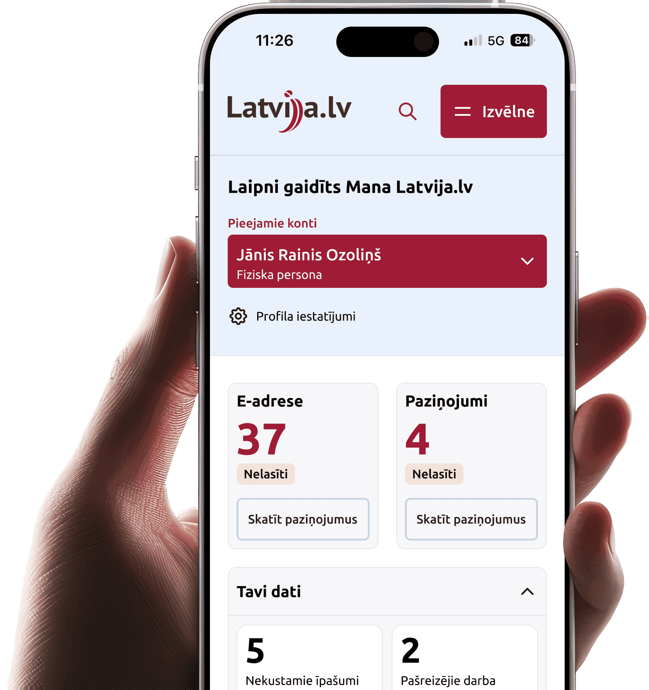

Kur atrast savus un bērna datus?
Noskaidro, kā sadaļā “Mani dati” apskatīt savus un pārstāvēto personu datus valsts reģistros.
Uz padomuVALSTS PĀRVALDES PAKALPOJUMU PORTĀLS
Paziņojumi par jauniem e-adreses ziņojumiem netiek sūtīti SMS. Ja saņemat šādu īsziņu, neatveriet tajā esošās saites. Jaunus e-adreses ziņojumus pārbaudiet tikai portālā Latvija.gov.lv.

Noskaidro, kā sadaļā “Mani dati” apskatīt savus un pārstāvēto personu datus valsts reģistros.
Uz padomuIepazīsti e-rēķinu iespējas: sagatavo, nosūti, saņem un pārvaldi rēķinus vienuviet Latvija.gov.lv.
Uz padomuUzzini, kā e-adrese nodrošina drošu un oficiālu saziņu ar valsts un pašvaldību iestādēm.
Uz padomuApstiprini savu e-pasta adresi, lai laikus uzzinātu par jauniem e-adresē saņemtajiem ziņojumiem.
Uz padomuLatvija.lv kopš 2006. gada - Tavs drošais ceļvedis digitālajā valstī.